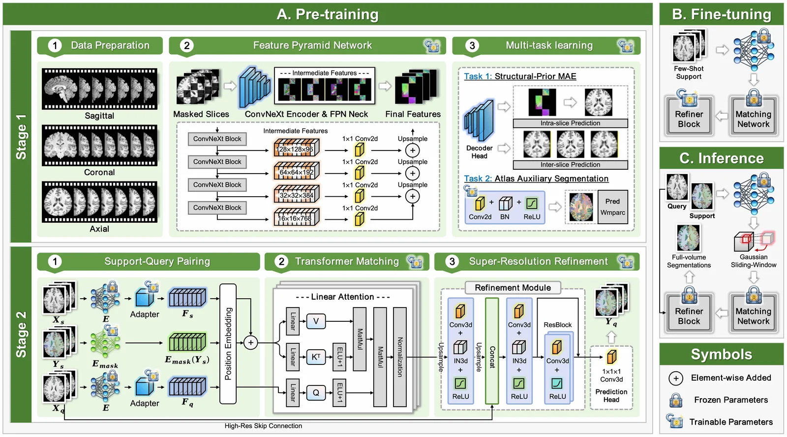

A Unified Few-Shot Framework for Multi-Atlas Neuroimaging Segmentation Leveraging Vision Foundation Models
Co-First Author | Nov 2025 - Present (MICCAI 2026 Submission)
Collaboration with Bocheng Guo, Wei Zhang (UESTC), Fan Zhang, and Ofer Pasternak & Lauren O'Donnell (Harvard Medical School)

Project Introduction
Proposed a unified few-shot framework that adapts large-scale vision foundation models (DINOv3-initialized ConvNeXt) to 3D multi-atlas brain MRI segmentation through an efficient "pre-train, fine-tune and inference" paradigm. The approach addresses the high cost of generating large-scale ground truth labels and the prohibitive overhead of re-training models for new atlas protocols.
Personal Contributions
- Designed Stage I Anatomically-Prioritized Representation Learning, including a 2.5D Spatial-Aware Masked Autoencoding (SA-MAE) task with composite L1-SSIM loss to instill volumetric awareness, plus an anatomical anchoring head that aligns the latent space to neuroanatomical boundaries.
- Implemented Stage II 3D Associative Matching, integrating a 3D ConvNeXt Adapter (3x7x7 depth-wise convolutions) and a Linear Transformer Matcher with O(N) complexity for dense voxel-wise label transfer.
- Developed an Image-Guided Super-Resolution Refinement module that fuses matched features with raw high-resolution MRI to recover fine boundary details.
- Proposed the "Lock-and-Finetune" strategy, freezing the backbone and matcher and only updating the lightweight SR Refiner for rapid adaptation to unseen atlases with negligible computational overhead.
Achievements
- Achieves over 95% of fully supervised nnU-Net performance using less than 5% of labeled data on the Human Connectome Project (HCP) dataset.
- Demonstrates strong generalization across atlases of different granularities: Yeo7 (14 labels), aparc.a2009s+aseg (148 labels), and HCP-MMP1 (360 labels).
- Submitted to MICCAI 2026 main conference.